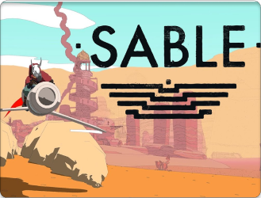

Bem vindo explorador! Este é um site em desenvolvimento focado em conquistas de jogos da Steam, como Hollow Knight e Outer Wilds. A plataforma trará uma visão detalhada de conquistas, estatísticas e guias, ajudando os jogadores a explorarem e completarem os jogos ao máximo.
Destaque da semana:
OUTER WILDS

Ganhador do Jogo do Ano de 2019 pela Giant Bomb, Polygon, Eurogamer e The Guardian, Outer Wilds é um jogo de mistério de mundo aberto aclamado pela crítica que retrata um sistema solar fadado a um loop temporal perpétuo.
Confira

Embarque em um rito de passagem que a levará por paisagens fascinantes,
repletos de maravilhas de um passado distante.
Conforme a história se desenrola, você vai entrando em uma viagem por
várias eras: o presente, a Idade Média, o futuro, a pré-história e a
antiguidade.
Inscryption é uma sombria odisseia de cartas que mescla baralhos,
quebra-cabeças e horror psicológico para criar uma amálgama
sanguinolenta.

Perdido, sozinho e separado da sua família, um gato de rua precisa
desvendar um mistério ancestral para fugir de uma cibercidade esquecida.